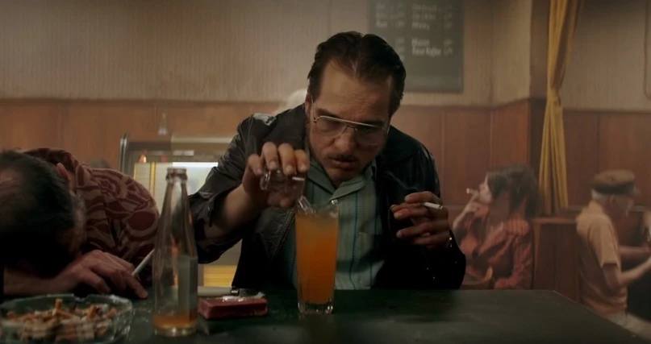
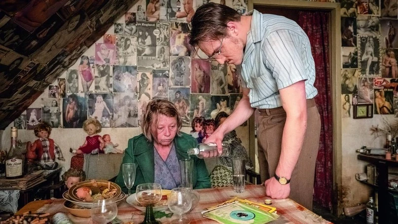

Шнапс, немецкий поп, секс с алкоголичками, расчлененка и ароматизаторы-елочки: кабак в Гамбурге упадочен и порочен
Давно мы не рассказывали вам о кинолентах, премьеру которых очень легко пропустить. Поэтому нам пришлось сгонять на пресс-показ «винтажного хоррора» от Фатиха Акина — фильма «Золотая перчатка», который тихонько выйдет в прокат 30 мая. В его основе — одноименный роман комика Хайнца Штрунка о реально существовавшем серийном убийце. В Гамбурге 70-х годов психопат и алкоголик Фриц Хонка умудрился убить и расчленить четырех женщин. При этом избавляться от останков он не стал — предприимчиво складировал их у себя дома.
Атмосферой и колоритом «Золотая перчатка» прицельно бьет по почкам (чтоб следов особо не оставалось) и со зрителем не церемонится. Она услужливо распахивает перед нами дверь в тесную и во всех смыслах засранную мансарду герра Хонки (Йонас Дасслер): стены тут завешаны выцветшими вырезками из порножурналов, в качестве украшений — задрипанные куклы, с потолка празднично свисают ароматизаторы-елочки — так наивно хозяин дома борется с вонью разлагающихся трупов.
Будущих жертв Хонка находит в кабаке «Золотая перчатка». Тут проводят время разномастные отбросы общества: спившиеся старики и потасканные алкоголички, глухой одноглазый эсэсовец и официант, отзывающийся на прозвище Анус. Проникаться душой не к кому, убиенных фрау жалко не будет: они такие же опустившиеся, как главный герой.
Львиная доля хронометража отведена дряблым непривлекательным телесам, крови, моче и прочей гадости. Она напомнит вам, что зло — это не всегда франтоватый Ганнибал Лектер, который, отобедав человечиной, эстестично промакнет губы салфеточкой и никогда, не дай Бог, случайно не причавкнет.

Люди, которые брызгали слюной, возмущаясь романтизацией Теда Банди, которого в недавнем триллере «Красивый, плохой, злой» сыграл приторный диснеевский принц Зак Эфрон, на сеансе «Перчатки» смогут облегченно выдохнуть. На экране нелепые злоключения жалкого человечка с плохой осанкой, сальными волосами, гнилыми зубами, сломанным носом и завораживающим взглядом из серии «один глаз на вас, другой — на Кавказ». И никакой романтики.
Несмотря на то что «Золотая перчатка» позиционируется в первую очередь как криминальный триллер, это — черная комедия. Ненавидеть Фрица Хонку за его преступления не хочется, настолько фарсовый мир оказывается перед нами. Среди разврата, вырождения и тупой жестокости неумелые расправы над пропитыми старухами кажутся такими же обыденными, как в нашем чуть более пригожем мире — понедельничная выволочка от шефа, пребывающего в похмельном угаре.

Фильм сравнивают с фонтриеровским «Домом, который построил Джек», однако вожделенного Ларсом символизма, лезущего изо всех щелей, тут нет: это скорее небольшой коллаб Тарантино и Паланика (и второго тут гораздо больше, чем первого). О товарище Квентине напоминает абсурдный, жестковатый юморок, гротеск и кровавость, о гражданине Чаке — ядреное сочетание лютой омерзительности и чудаковатого обаяния: ты следишь за историей, думаешь «тьфу, блядь», но обязательно доходишь до конца.
«Перчатку» стоит посмотреть хотя бы для того, чтобы на два часа залезть в чан с говном, а потом вылезти наружу и обратить внимание на то, как чисто у вас в квартире и какие у окружающих умытые румяные лица. А еще вам точно стоит узнать, почему во всем виноваты греки.